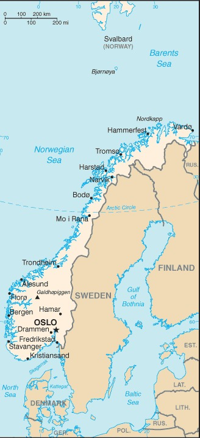

Genel Bilgiler
Norveç, Kuzey Avrupa’da yer alan anayasal bir monarşi ile yönetilen ülkedir. Başkenti Oslo’dur. Yaklaşık 5,4 milyon nüfusa sahiptir. Resmî dili Norveççe’dir ve para birimi Norveç Kronu (NOK)’dur. Norveç, Avrupa Ekonomik Alanı üyesi olmasına rağmen Avrupa Birliği üyesi değildir. Ülke, yüksek yaşam standartları ve doğal kaynakları ile tanınır.
Norveç, batıda Atlantik Okyanusu ve Norveç Denizi, doğuda İsveç ve Finlandiya ile çevrilidir. Yüzölçümü yaklaşık 385.207 km²’dir. Ülke coğrafyası dağlık ve fiyortlarla kaplıdır. Önemli nehirleri arasında Glomma ve Pasvikelva yer alır. Kuzey Kutup Dairesi’ne kadar uzanan uzun kıyıları ve binlerce adası vardır.
Başkent: Oslo
Kıta: Avrupa
Yüzölçümü: 385.207 km²
Nüfus (2025): 5.400.000

Bayrak Anlamı: Norveç bayrağı kırmızı zemin üzerinde mavi bir İskandinav haçına sahiptir; haç beyaz kenarlıklıdır. Mavi haç İsveç ve Danimarka ile tarihi bağları simgeler, beyaz kenarlık barışı temsil eder. Kırmızı zemin cesareti ve bağımsızlığı simgeler. Bayrak 1821 yılında resmî olarak kabul edilmiştir.
Norveç Haritası
Ekonomi
Norveç ekonomisi yüksek gelirli ve gelişmiş bir yapıya sahiptir. Petrol ve doğal gaz ihracatı, enerji sektörünün temelini oluşturur. Balıkçılık, denizcilik ve gemi inşası da önemli gelir kaynaklarıdır. Sanayi ve hizmet sektörü güçlüdür; özellikle bankacılık, turizm ve telekomünikasyon öne çıkar. Norveç, sosyal refah ve sürdürülebilir enerji alanlarında öncü ülkelerden biridir.
| Yıl | İhracat (Milyar $) | İthalat (Milyar $) |
|---|---|---|
| 2019 | 112 | 102 |
| 2020 | 100 | 90 |
| 2021 | 118 | 108 |
| 2022 | 120 | 110 |
| 2023 | 123 | 113 |